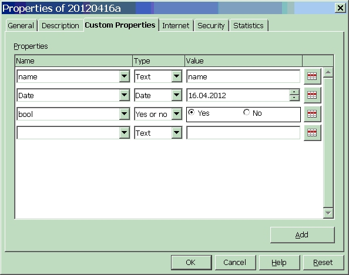

20120416¶
Experimenting¶
I launch LibreOffice, create an empty text document and save it as “a.odt”. Then I add three Custom Properties...
... then save the file under a name b.odt.
Then I compare the content of the .odt package. The only difference is in meta.xml:
<office:document-meta xmlns:office="urn:oasis:names:tc:opendocument:xmlns:office:1.0" xmlns:xlink="http://www.w3.org/1999/xlink" xmlns:dc="http://purl.org/dc/elements/1.1/" xmlns:meta="urn:oasis:names:tc:opendocument:xmlns:meta:1.0" xmlns:ooo="http://openoffice.org/2004/office" xmlns:grddl="http://www.w3.org/2003/g/data-view#" office:version="1.2">
<office:meta>
...
<meta:user-defined meta:name="Date" meta:value-type="date">2012-04-16</meta:user-defined>
<meta:user-defined meta:name="bool" meta:value-type="boolean">true</meta:user-defined>
<meta:user-defined meta:name="name">name</meta:user-defined>
</office:meta>
</office:document-meta>
Great! So it should be easy to add values for these variables when generating an .odt.
But oops: Custom Document properties are not accessible when specifying conditions! (At least I didn’t get it to work and I didn’t find any documentation that states is would.)
Same exercise with a document where I inserted custom fields using “Set Variable” and “Show Variable”. Now the difference is in the content.xml, inside the <office:text> element. Before the first <text:p> there is now a new <text:variable-decls> container, a global list which LO obviously has automatically guessed:
<text:variable-decls>
<text:variable-decl office:value-type="string" text:name="last_name"/>
<text:variable-decl office:value-type="date" text:name="date_issued"/>
</text:variable-decls>
After this, here is how “Set Variable” fields look like:
<text:p text:style-name="Standard">Set Variable last_name = <text:variable-set text:name="last_name" office:value-type="string">Arens</text:variable-set> , date_issued = <text:s/>
<text:variable-set text:name="date_issued" text:formula="ooow:40981" office:value-type="date" office:date-value="2012-03-13" style:data-style-name="N38">Dienstag, 13. März 2012</text:variable-set> </text:p>
</text:p>
And “Show Variable” fields look similar:
<text:p text:style-name="Standard">Show Variable last_name = <text:variable-get text:name="last_name" office:value-type="string">Arens</text:variable-get>, date_issued = <text:s/>
<text:variable-get text:name="date_issued" office:value-type="date" style:data-style-name="N36">13.03.2012</text:variable-get>
</text:p>
It should be easy, using ODFPy, to generate a document with predefined variables:
<text:variable-decls>–> text.VariableDecls<text:variable-get>–> text.VariableGet<text:variable-set>–> text.VariableSet

{kind=link}